夜幕降临，球场灯光照亮秦巴山区的夏夜。终场哨声已经吹响，看台上的欢呼却迟迟没有散去。球迷涌向夜市，烧烤摊升起烟火，魔芋凉皮、神仙豆腐、富硒茶摊位前排起长队；巴山民歌再次响起，游客举着手机记录眼前的热闹，孩子抱着篮球在人群里穿梭。
如果不是亲眼来到这里，很难相信，这样的热闹发生在一座总人口约16.5万的秦巴山区小县城。
人们从不同方向赶来。有人带着孩子，有人结伴自驾，有人从外省专程抵达。他们在这个夏夜共同做了一件事：走进一座球场，为一场属于普通人的比赛欢呼。
开赛之前，仪式已经让整座球场进入同一种情绪。
当欢呼声越过看台，岚皋也开始进入更多人的视野。
群众赛事的热潮从一个个乡村和县城生长起来。镜头从全国缓缓收拢，越过陕西，进入安康，最终停在秦巴腹地的岚皋。
底图来源：自然资源部标准地图服务系统（审图号：GS(2016)2923号）
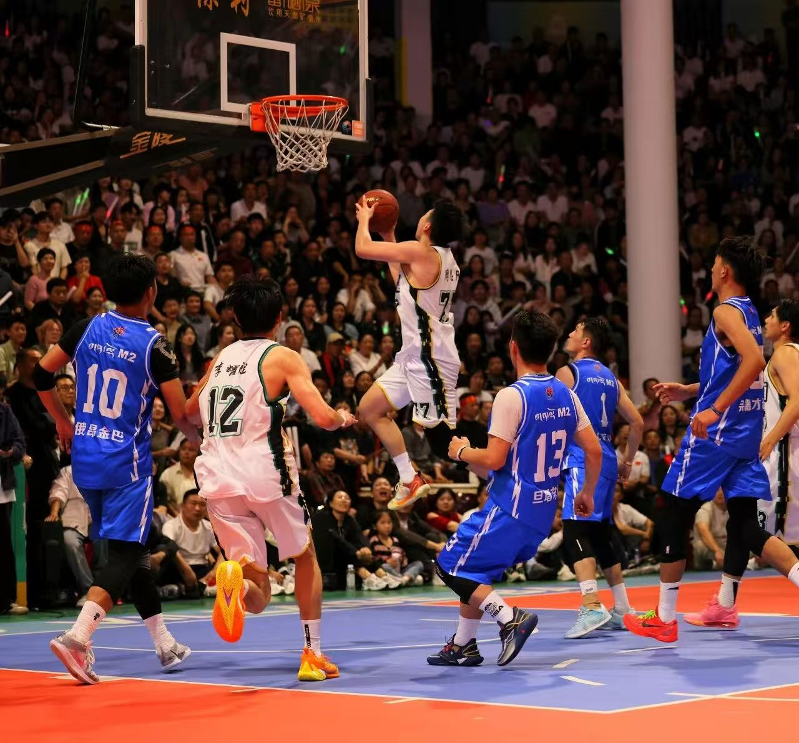
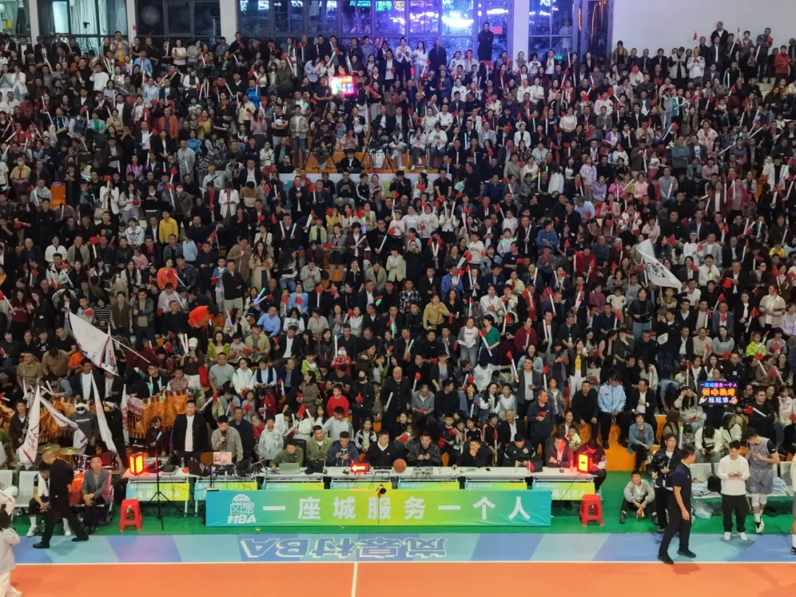
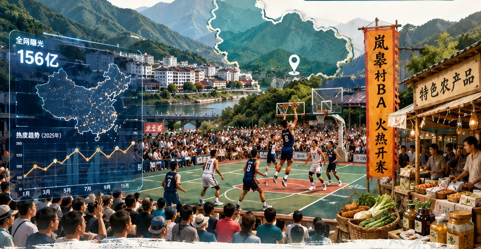
三年间，岚皋增加的不只是比赛数量。赛事的时间被拉长，参与者不断增加，球场与县城之间的联系也越来越紧密。
三年核心指标增长趋势
数据来源：安康融媒、新华网、国家体育总局官网等
岚皋"村BA"并不是凭空出现的。村庄里的球场、夏夜里的比赛和一代代群众的参与，早已让篮球成为当地熟悉的公共生活。当赛事真正启动时，被点燃的不是一块陌生场地，而是积累多年的群众基础。
岚皋村级篮球场与群众篮球活动素材
岚皋没有把别处的热闹原样搬进秦巴山中，而是把自己的篮球基础、地方文化、山水资源和普通群众重新编进赛事。借来的不是现成答案，而是重新组织本地资源的方法。
全国群众赛事持续升温，为岚皋提供了进入公共视野的机会；真正把目光留下来的，仍然是本地长期积累的篮球传统和县城故事。
岚皋主动走出去，观察成熟群众赛事如何组织比赛、承接游客、展示文化和联动商业。回到岚皋以后，这些经验被重新放进当地的篮球基础、县域空间和秦巴文化之中。
学习发生在外面，答案最终仍然写在岚皋。岚皋真正借到的，是组织赛事的方法，而不是复制另一座城市的样子。
大道锣鼓、晓道竹马、巴人唢呐、南宫雄狮、岚河演艺和县城巡游进入比赛间隙。观众等待下一次开球时，看到的仍然是岚皋。
球员负责比赛，演员负责表演，推荐官介绍山水与物产，主播把现场送进手机屏幕，商户接住游客，志愿者维持秩序，普通居民则用自己的镜头记录这一切。
比赛负责聚人，文化负责留人，服务负责暖人，产业负责把人气留下来。
比赛开始前，赛事信息已经被拆解为剧情短片、球员邀约、推荐官推介、赛程预告和文旅内容。不同主体从不同角度讲述岚皋，让一场比赛提前进入观众的屏幕。
岚皋没有只发布一条比赛通知，而是先把赛事写进故事。
剧情宣传片借助人物、场景和悬念，把比赛时间和地点转化为可以观看、可以转发的内容。
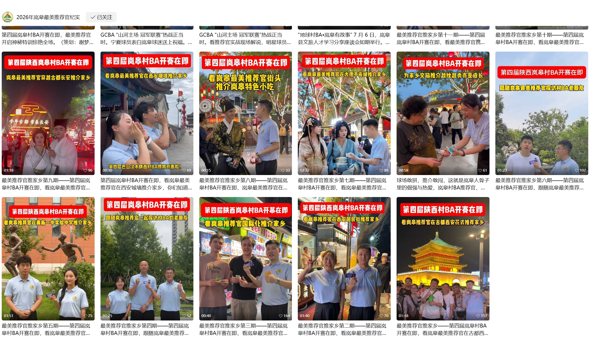
内容被提前准备，再通过不同的人和账号送进不同的社交关系。岚皋并不是等待某一条视频偶然走红。
比分制造悬念，锣鼓、民歌、巡游和方言助威形成地方辨识度，观众的欢呼和手机镜头则把现场不断送向外部平台。
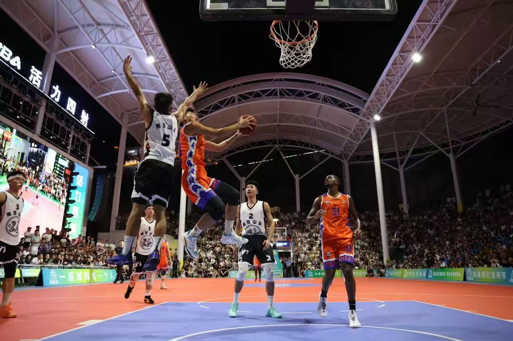
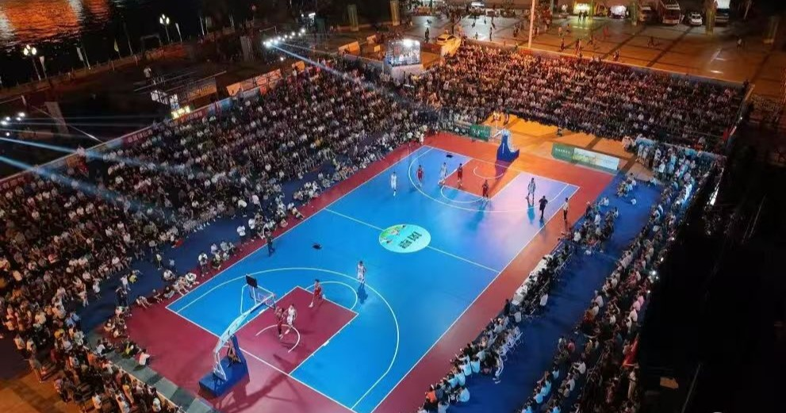
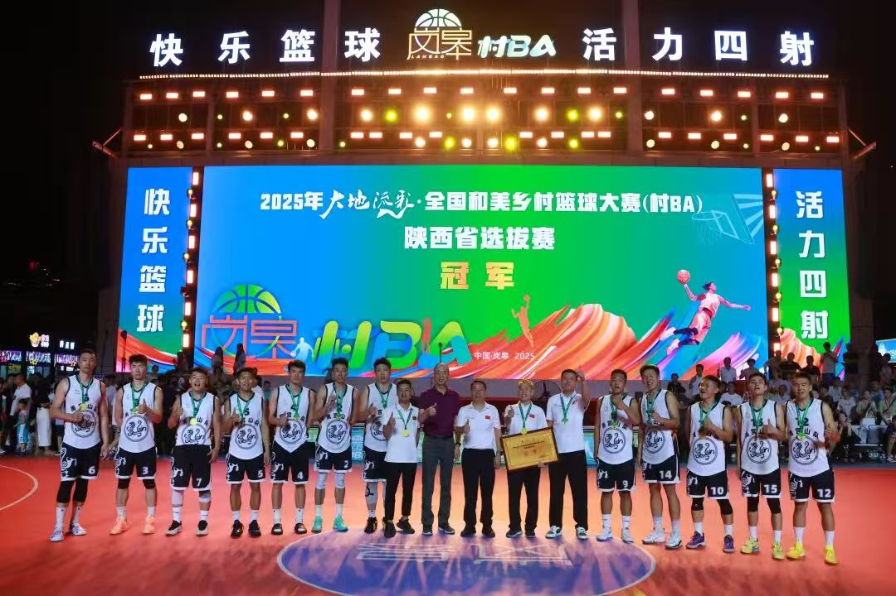
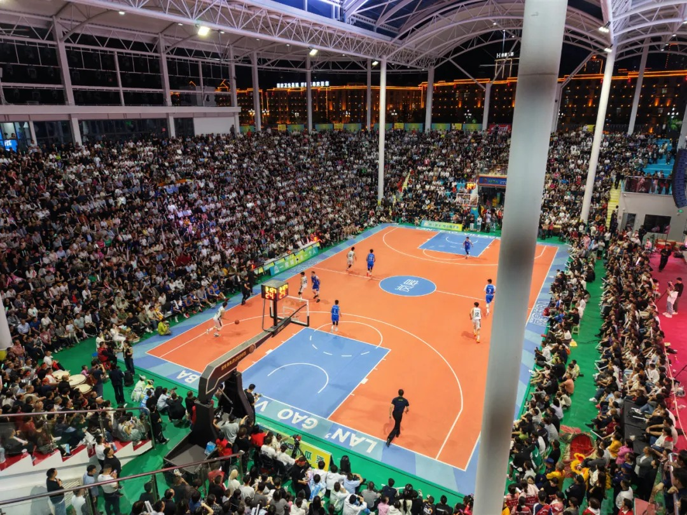
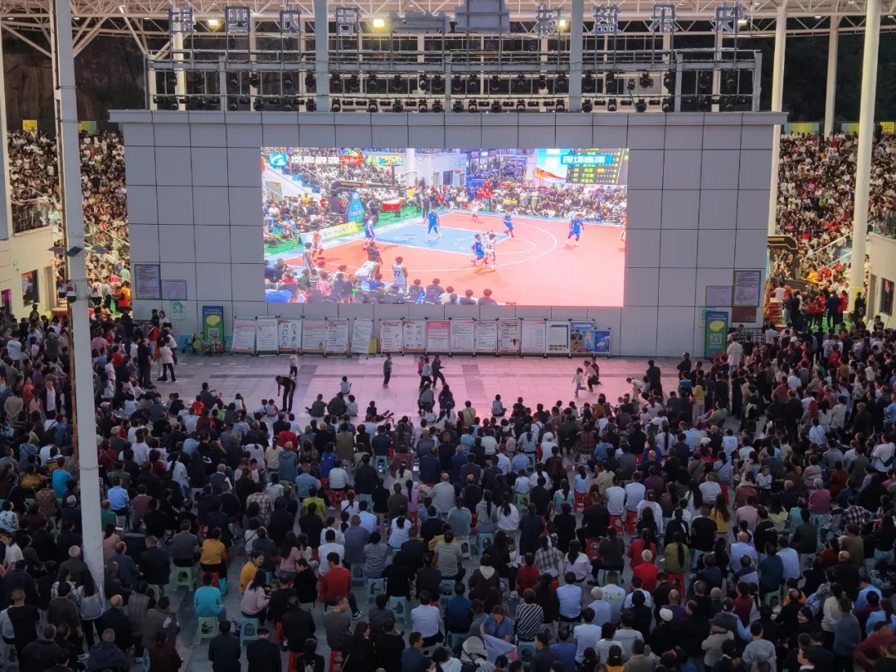
当每个人都可以记录现场，岚皋就不再只有一个官方镜头。
许多人的镜头，共同拼出了岚皋被看见的路径。
比赛让人们聚在一起。歌声让共同情绪拥有了可以带走的形状。当旋律再次响起，人们想起的不只是比分。
【待补充】
比赛结束后，游客被引向夜市、餐馆、景区和乡镇展销活动。停车、住宿、交通、餐饮和志愿服务共同承接线下客流，直播间和电商平台继续承接线上关注。
推荐官介绍停车、住宿、美食；志愿服务；游客引导。
有人负责把游客请来，也有人负责告诉他们车停在哪里、住在哪里、吃什么、去哪里。
一次免费的车辆检查，看似只是小服务，却让赛事体验延伸到球场之外。
商户通过赛事套餐、折扣和主题活动，把看台上的人气接进街巷消费。
当赛事拥有稳定的人群和注意力，企业开始围绕产品、文旅和消费寻找新的合作入口。
岚皋游客接待规模持续扩大
约500万人次的具体统计周期及范围尚待补充，以最终官方来源为准。
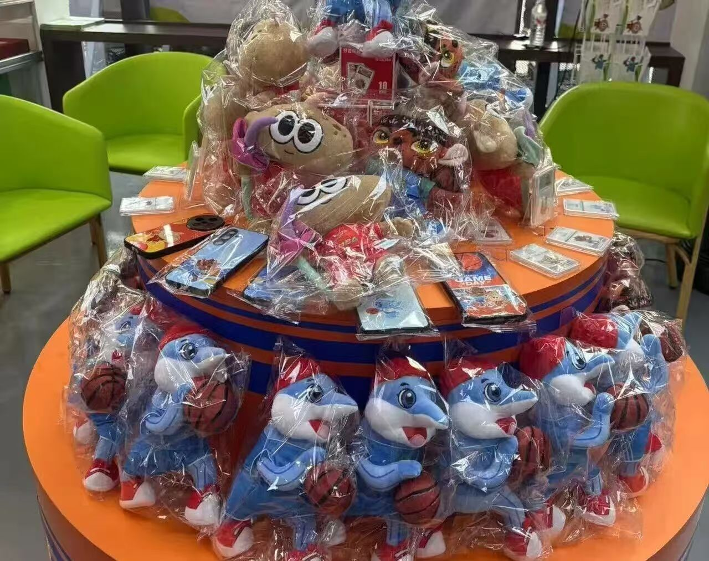
对平台来说，它们只是一次点击和观看；对具体的人来说，却可能是一桌新增的客人、一笔新的订单，或者一个回到家乡的理由。
在公开评论中，篮球只是人们认识岚皋的起点。观众还会谈论锣鼓、竹马、山水、美食、志愿服务和当地人的热情。赛事传播出去的，不只是一次比赛结果，也是一座县城留给外界的整体印象。
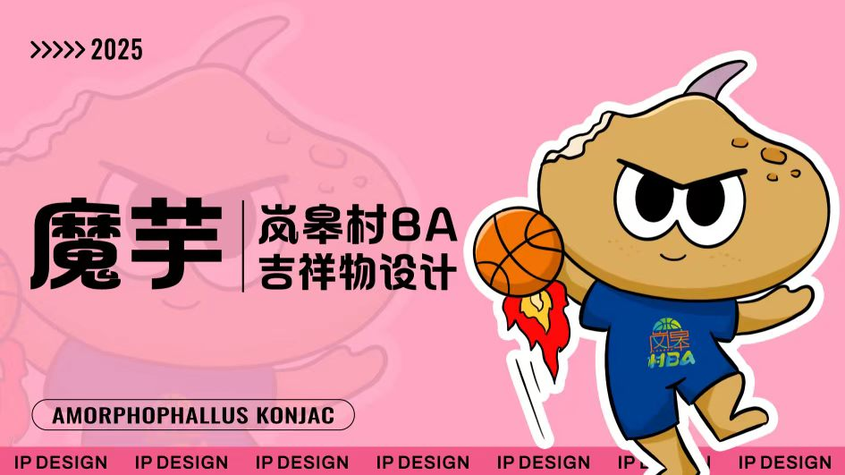
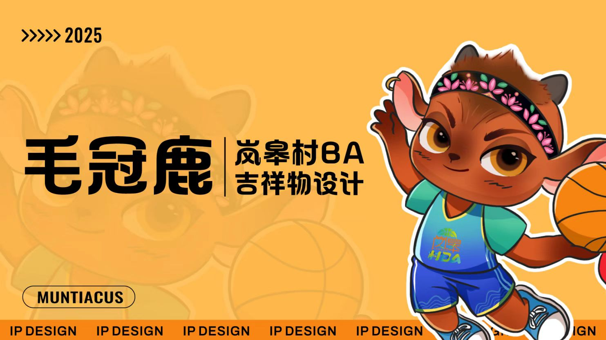
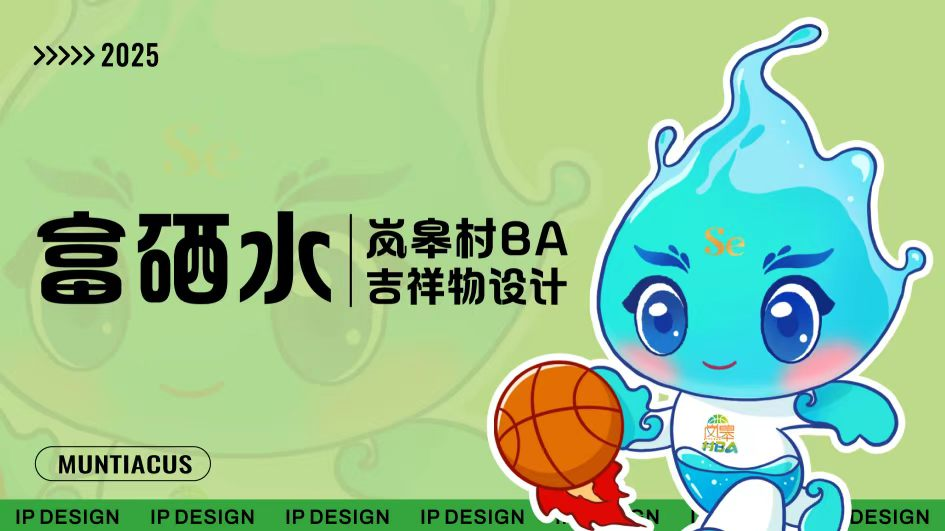
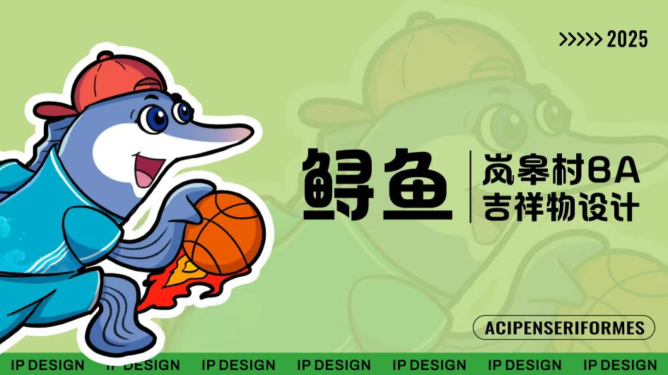
从一句方言、一首主题曲，到赛事形象和文创产品，岚皋正在把短暂的关注转化为可以识别、可以带走的城市记忆。
数据来源：国家体育总局官网、经济参考报、中国日报、新华网、岚皋县人民政府官网等
本作品为全国大学生数据新闻比赛参赛作品，所有数据均来自公开报道。